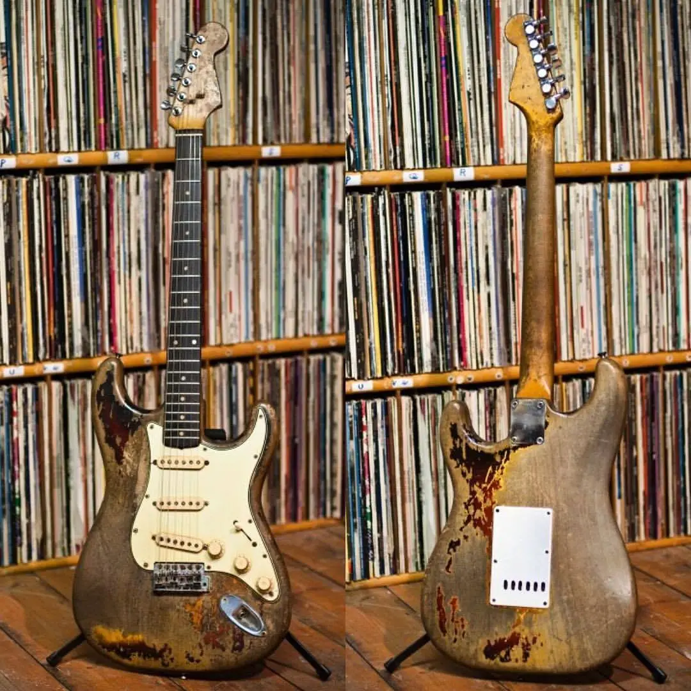

Rorys 1961 Stratocaster
Rorys iconic 1961 Fender Stratocaster. Rory bought this guitar for £100 in 1963 on credit from the owner of Crowleys Music Store in Cork, Michael Crowley. According to the legend, this was the first Stratocaster to ever reach Ireland. The story of how Rory came to own his 1961 Fender Stratocaster is somewhat interesting in itself. The guitars previous owner was Jim Conlon, who is known for being the founder and the guitarist of an Irish band called Royal Showband. Jim allegedly ordered a red Stratocaster from the US but this sunburst came instead, so he had to use the guitar for around half a year until the red one would arrive. After the red Strat finally got to Ireland, the sunburst was put on sale at Michael Crowleys store, who eventually met Rory and agreed to sell the guitar to him in installments.
The guitar as seen has intensive wear and although disregarded by most, a factor that might have also played a role in this was that the guitar was left in a rainy ditch for days at some point in 1966. A few days prior to this, Rorys Strat was stolen from him during alongside a Telecaster that he borrowed from a friend to use as a slide guitar for the upcoming gig in Dublin. Rory decided to contact the producers of the television show called “Garda Patrol”, who then featured the guitar in one their segments that supposedly revolved around helping people locate their lost stuff. A few days passed and the guitar was found abandoned in a ditch, and following that was successfully returned to Rory who swore never to lose sight of it again.